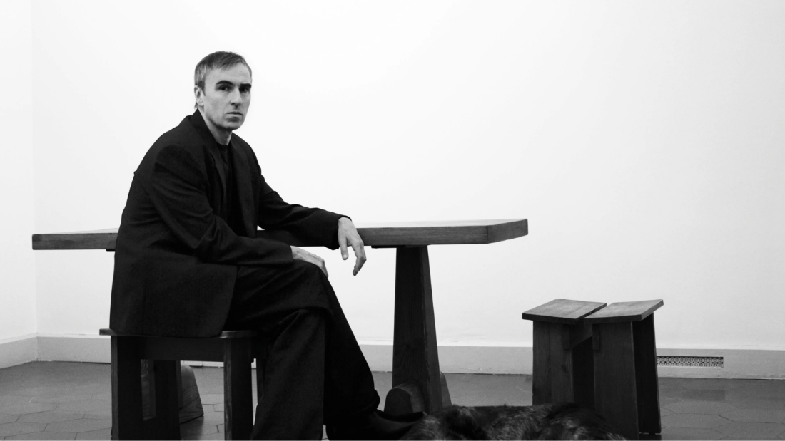

RAF SIMONS
1968년 벨기에의 닐펠트 교외 겐트 출생.
공업디자인학교에 입학 후, 사진과 영상을 배움.
정규적인 패션 교육은 받지 않았으며,
학생 시절 월터 밴 베이렌동크의 앤트워프 오피스에서
연수한 것이 계기가 되어 패션에 흥미를 느꼈다고 함.
(본인은 마틴 마르지엘라의 컬렉션을 보고
패션으로의 길을 결정하였다고 함.)
스스로 만든 옷을 들고
앤트워프 왕립 미술 아카데미의
패션학과 디렉터 린다 로파를 찾아갔지만,
“당신은 우리 학교에서 배울 필요가 없다”
라는 말을 듣게 되며
계속 독학으로 의류를 제작하게 됨.
린다 로파의 도움으로
1995AW, 프레젠테이션 형식으로
‘RAF SIMONS’ 컬렉션을 발표.
1997-98AW 파리 맨즈 프레타포르테 컬렉션 참가.
2003년 스위스 루체른, 컨템포러리 디자이너 콩쿠르에서
그랑프리 수상.
2005년, JILSANDER의
맨즈웨어, 레이디스 웨어 크리에이티브 디렉터 임명.
2006SS부터 디퓨전라인
'RAF BY RAF SIMONS’ 전개.
2008년 EASTPAK 과의 콜라보 진행
'EASTPAK RAF SIMONS’
2011년 ‘RAF BY RAF SIMONS’ 종료 후,
브랜드 설립 15주년을 기념해
‘RAF SIMONS 1995’ 시작
2012년 JILSANDER 퇴임 후,
Christian Dior 아티스틱 디렉터 취임. (2015 퇴임)
2016년 Calvin Klein
수석 크리에이티브 오피서 취임. (2018 퇴임)
2017년 CFDA 패션 어워드,
맨즈, 레이디스 웨어 모두
Designer Of The Year 수상.
2021년 PRADA
공동 크리에이티브 디렉터로 취임.
(미우치아 프라다와 함께 컬렉션을 다루게 됨.)
2023년
23SS 컬렉션을 가지고
자신의 브랜드 ‘RAF SIMONS’ 종료를 발표.